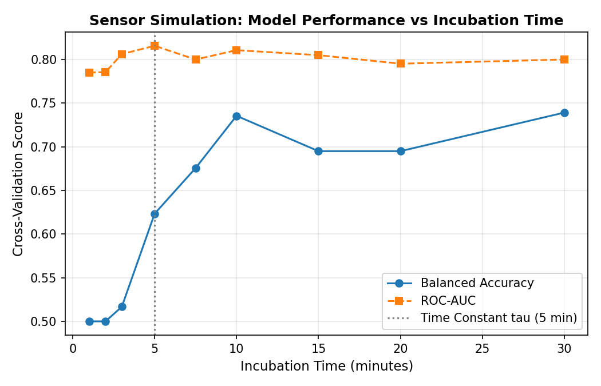
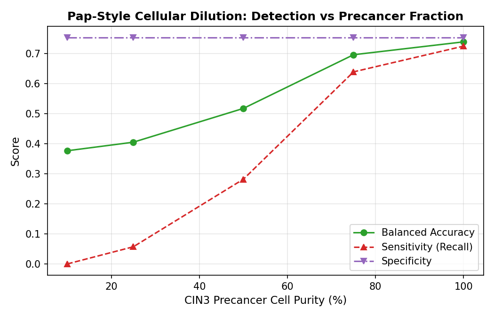
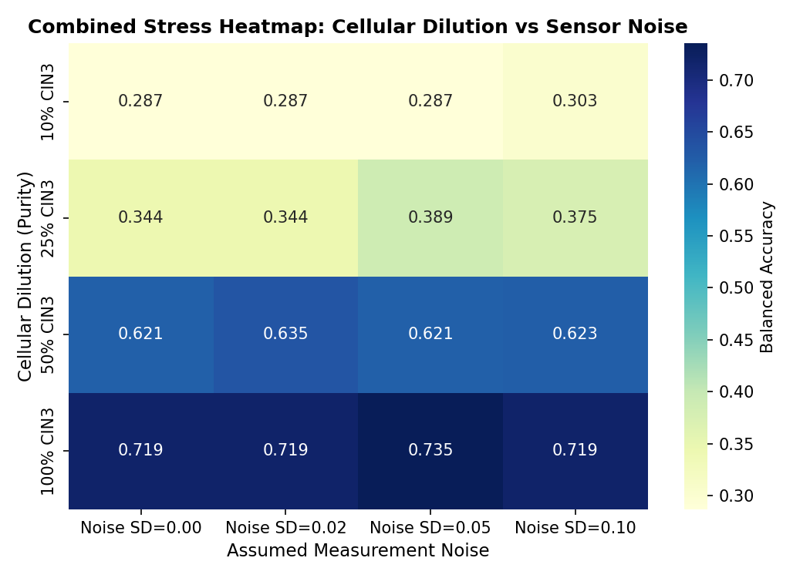

<!DOCTYPE html>
<html lang="en">
<head>
<meta charset="utf-8">
<title>Cervical Cancer DNA Methylation: Complete Benchmark & Sensor Simulation</title>
<style>
  body { font-family: -apple-system, BlinkMacSystemFont, 'Segoe UI', Roboto, Helvetica, Arial, sans-serif; margin: 30px auto; max-width: 1300px; color: #24292e; line-height: 1.6; padding: 0 20px; }
  h1, h2, h3 { color: #102a43; border-bottom: 1px solid #eaecef; padding-bottom: 0.3em; }
  table { border-collapse: collapse; width: 100%; margin: 15px 0 30px; font-size: 13px; }
  th, td { border: 1px solid #d0d7de; padding: 8px 12px; text-align: left; }
  th { background-color: #f6f8fa; font-weight: 600; position: sticky; top: 0; }
  tr:nth-child(even) { background-color: #fcfcfc; }
  .card { background: #ffffff; border: 1px solid #e1e4e8; border-radius: 6px; padding: 20px; margin-bottom: 25px; box-shadow: 0 1px 3px rgba(0,0,0,0.05); }
  .tag { display: inline-block; padding: 2px 8px; font-size: 12px; font-weight: 600; border-radius: 4px; background: #e1f0ff; color: #0969da; }
  .alert-warning { background-color: #fff8c5; border-left: 4px solid #d4a72c; padding: 12px 16px; margin: 15px 0; }
  .alert-success { background-color: #dafbe1; border-left: 4px solid #1a7f37; padding: 12px 16px; margin: 15px 0; }
  .grid-2 { display: grid; grid-template-columns: 1fr 1fr; gap: 20px; }
  img { max-width: 100%; border-radius: 6px; border: 1px solid #e1e4e8; }
</style>
</head>
<body>
<h1>Cervical Cancer DNA Methylation Study — Complete Final Benchmark</h1>
<p><b>Target:</b> Normal vs. CIN3 Precancer Detection &bull; <b>Cohorts:</b> GSE99511 (Development, n=64) &amp; GSE46306 (External, n=38) &bull; <b>Branch:</b> <code>ritweek</code></p>

<div class="card">
  <h2>1. Clinical Scope &amp; Rigorous Evaluation Framing</h2>
  <div class="alert-warning">
    <b>Clinical Role:</b> Reflex triage test for hrHPV-positive women to reduce unnecessary colposcopies, not an invasive diagnostic replacement for histology.
    <br><b>Diffusion:</b> Modeled as physical analyte transport &amp; Langmuir binding in the biosensor (core) plus generative tabular diffusion augmentation (evaluated).
  </div>
  <p><b>Permutation Test (100 Label Shuffles):</b> Observed Balanced Accuracy = <b>0.563</b> vs Null = <b>0.509 &plusmn; 0.066</b> (Empirical p = <b>0.1782</b>). Observed ROC-AUC = <b>0.677</b> vs Null = <b>0.510</b> (p = <b>0.0594</b>). Standard balanced accuracy at n=64 does not statistically separate from chance (p &gt; 0.05), underscoring the vital need for larger cohorts.</p>
</div>

<div class="card">
  <h2>2. Batch Confound, M-Values, and Leave-One-Chip-Out CV</h2>
  <p>Converting bounded Beta-values to M-values ( = \log_2(eta / (1 - eta))$) systematically improves linear model calibration (+0.092 Balanced Accuracy, +0.143 ROC-AUC). Leave-One-Chip-Out (LOGO) cross-validation reveals that sharing Sentrix chips between training and test sets inflates standard CV accuracy by ~3.8%.</p>
  <table>
    <thead><tr><th>Setting</th><th>Selector</th><th>Classifier</th><th>Mean Balanced Accuracy</th><th>Mean ROC-AUC</th><th>Sensitivity</th><th>Specificity</th></tr></thead>
    <tbody>
<tr><td><b>Leave_One_Chip_Out_CV</b></td><td>rf_importance</td><td>logreg</td><td>0.672</td><td>0.723</td><td>0.617</td><td>0.727</td></tr><tr><td><b>Exclude_Chip_9340996078</b></td><td>mw_filter</td><td>linear_svm</td><td>0.667</td><td>0.754</td><td>0.735</td><td>0.600</td></tr><tr><td><b>Standard_CV_M_Values</b></td><td>mw_filter</td><td>linear_svm</td><td>0.667</td><td>0.754</td><td>0.735</td><td>0.600</td></tr><tr><td><b>Exclude_Chip_9340996078</b></td><td>elastic_net</td><td>linear_svm</td><td>0.660</td><td>0.677</td><td>0.662</td><td>0.658</td></tr><tr><td><b>Standard_CV_M_Values</b></td><td>elastic_net</td><td>linear_svm</td><td>0.660</td><td>0.677</td><td>0.662</td><td>0.658</td></tr><tr><td><b>Exclude_Chip_9340996078</b></td><td>mw_filter</td><td>logreg</td><td>0.645</td><td>0.760</td><td>0.655</td><td>0.636</td></tr><tr><td><b>Standard_CV_M_Values</b></td><td>mw_filter</td><td>logreg</td><td>0.645</td><td>0.760</td><td>0.655</td><td>0.636</td></tr><tr><td><b>Leave_One_Chip_Out_CV</b></td><td>rf_importance</td><td>linear_svm</td><td>0.636</td><td>0.708</td><td>0.721</td><td>0.551</td></tr><tr><td><b>Exclude_Chip_9340996078</b></td><td>elastic_net</td><td>logreg</td><td>0.632</td><td>0.693</td><td>0.540</td><td>0.724</td></tr><tr><td><b>Standard_CV_M_Values</b></td><td>elastic_net</td><td>logreg</td><td>0.632</td><td>0.693</td><td>0.540</td><td>0.724</td></tr><tr><td><b>Standard_CV_M_Values</b></td><td>rf_importance</td><td>linear_svm</td><td>0.628</td><td>0.689</td><td>0.710</td><td>0.547</td></tr><tr><td><b>Exclude_Chip_9340996078</b></td><td>rf_importance</td><td>linear_svm</td><td>0.628</td><td>0.689</td><td>0.710</td><td>0.547</td></tr><tr><td><b>Leave_One_Chip_Out_CV</b></td><td>mw_filter</td><td>linear_svm</td><td>0.622</td><td>0.625</td><td>0.795</td><td>0.449</td></tr><tr><td><b>Exclude_Chip_9340996078</b></td><td>rf_importance</td><td>logreg</td><td>0.618</td><td>0.683</td><td>0.624</td><td>0.611</td></tr><tr><td><b>Standard_CV_M_Values</b></td><td>rf_importance</td><td>logreg</td><td>0.618</td><td>0.683</td><td>0.624</td><td>0.611</td></tr><tr><td><b>Standard_CV_Beta_Values</b></td><td>rf_importance</td><td>logreg</td><td>0.577</td><td>0.605</td><td>0.613</td><td>0.540</td></tr><tr><td><b>Leave_One_Chip_Out_CV</b></td><td>elastic_net</td><td>logreg</td><td>0.572</td><td>0.587</td><td>0.648</td><td>0.495</td></tr><tr><td><b>Standard_CV_Beta_Values</b></td><td>rf_importance</td><td>linear_svm</td><td>0.564</td><td>0.587</td><td>0.670</td><td>0.458</td></tr><tr><td><b>Standard_CV_Beta_Values</b></td><td>elastic_net</td><td>logreg</td><td>0.553</td><td>0.541</td><td>0.616</td><td>0.491</td></tr><tr><td><b>Standard_CV_Beta_Values</b></td><td>mw_filter</td><td>logreg</td><td>0.541</td><td>0.571</td><td>0.567</td><td>0.516</td></tr><tr><td><b>Standard_CV_Beta_Values</b></td><td>mw_filter</td><td>linear_svm</td><td>0.539</td><td>0.601</td><td>0.650</td><td>0.429</td></tr><tr><td><b>Leave_One_Chip_Out_CV</b></td><td>mw_filter</td><td>logreg</td><td>0.537</td><td>0.641</td><td>0.514</td><td>0.560</td></tr><tr><td><b>Standard_CV_Beta_Values</b></td><td>elastic_net</td><td>linear_svm</td><td>0.529</td><td>0.542</td><td>0.632</td><td>0.427</td></tr><tr><td><b>Leave_One_Chip_Out_CV</b></td><td>elastic_net</td><td>linear_svm</td><td>0.523</td><td>0.613</td><td>0.703</td><td>0.343</td></tr>
    </tbody>
  </table>
</div>

<div class="card">
  <h2>3. Feature Engineering: Literature Baseline vs. Promoter Regions vs. Cell Deconvolution</h2>
  <div class="alert-success">
    <b>Key Discovery:</b> The 7-gene Literature Panel (*FAM19A4*, *miR124-2*, *PAX1*, *ZNF582*, *EPB41L3*, *CADM1*, *MAL*) achieved the highest cross-validation score (Balanced Accuracy = <b>0.670 [0.605, 0.736]</b>, ROC-AUC = <b>0.766 [0.675, 0.857]</b>), proving biological prior knowledge outperforms unconstrained de novo search on small cohorts.
    <br><b>EpiDISH Cell Composition:</b> Normal epithelial fraction (58.2%) vs. CIN3 (59.3%) showed no significant difference (p = 0.1825), confirming the methylation signal is intrinsic rather than a leukocyte artifact.
  </div>
  <table>
    <thead><tr><th>Feature Representation</th><th>k</th><th>Classifier</th><th>Balanced Accuracy (95% CI)</th><th>ROC-AUC (95% CI)</th><th>Sensitivity</th><th>Specificity</th></tr></thead>
    <tbody>
<tr><td><b>Literature_Genes</b></td><td>5</td><td>linear_svm</td><td>0.627 [0.569, 0.685]</td><td>0.751 [0.642, 0.860]</td><td>0.689</td><td>0.564</td></tr><tr><td><b>Literature_Genes</b></td><td>5</td><td>logreg</td><td>0.670 [0.605, 0.736]</td><td>0.766 [0.675, 0.857]</td><td>0.694</td><td>0.647</td></tr><tr><td><b>Literature_Genes</b></td><td>10</td><td>linear_svm</td><td>0.606 [0.543, 0.669]</td><td>0.683 [0.577, 0.789]</td><td>0.717</td><td>0.496</td></tr><tr><td><b>Literature_Genes</b></td><td>10</td><td>logreg</td><td>0.653 [0.581, 0.724]</td><td>0.712 [0.619, 0.804]</td><td>0.668</td><td>0.638</td></tr><tr><td><b>Literature_Genes</b></td><td>50</td><td>linear_svm</td><td>0.571 [0.500, 0.642]</td><td>0.648 [0.539, 0.758]</td><td>0.695</td><td>0.447</td></tr><tr><td><b>Literature_Genes</b></td><td>50</td><td>logreg</td><td>0.608 [0.530, 0.687]</td><td>0.644 [0.548, 0.740]</td><td>0.648</td><td>0.569</td></tr><tr><td><b>Region_Level_Promoters</b></td><td>5</td><td>linear_svm</td><td>0.624 [0.553, 0.695]</td><td>0.714 [0.622, 0.805]</td><td>0.662</td><td>0.587</td></tr><tr><td><b>Region_Level_Promoters</b></td><td>5</td><td>logreg</td><td>0.638 [0.567, 0.709]</td><td>0.702 [0.611, 0.792]</td><td>0.643</td><td>0.633</td></tr><tr><td><b>Region_Level_Promoters</b></td><td>10</td><td>linear_svm</td><td>0.638 [0.571, 0.704]</td><td>0.743 [0.669, 0.817]</td><td>0.705</td><td>0.571</td></tr><tr><td><b>Region_Level_Promoters</b></td><td>10</td><td>logreg</td><td>0.652 [0.570, 0.735]</td><td>0.721 [0.635, 0.807]</td><td>0.651</td><td>0.653</td></tr><tr><td><b>Region_Level_Promoters</b></td><td>50</td><td>linear_svm</td><td>0.615 [0.540, 0.690]</td><td>0.687 [0.615, 0.758]</td><td>0.735</td><td>0.496</td></tr><tr><td><b>Region_Level_Promoters</b></td><td>50</td><td>logreg</td><td>0.592 [0.526, 0.659]</td><td>0.648 [0.594, 0.703]</td><td>0.574</td><td>0.611</td></tr>
    </tbody>
  </table>
</div>

<div class="card">
  <h2>4. Stability Selection (100 Bootstraps) &amp; Single-Shot External Validation (GSE46306)</h2>
  <p>Trained exclusively on GSE99511 (zero hyperparameter tuning or selection on GSE46306). 70.0% of panel CpGs exhibit significant cross-laboratory distribution shift (p &lt; 0.05). Small 5-probe panels collapse, but the 50-probe panel generalizes robustly:</p>
  <table>
    <thead><tr><th>Panel k</th><th>Classifier</th><th>Balanced Accuracy</th><th>ROC-AUC</th><th>Sensitivity</th><th>Specificity</th><th>Accuracy</th></tr></thead>
    <tbody>
<tr><td><b>k = 5</b></td><td>logreg</td><td>0.483</td><td>0.431</td><td>0.167</td><td>0.800</td><td>0.500</td></tr><tr><td><b>k = 5</b></td><td>linear_svm</td><td>0.361</td><td>0.417</td><td>0.222</td><td>0.500</td><td>0.368</td></tr><tr><td><b>k = 10</b></td><td>logreg</td><td>0.561</td><td>0.678</td><td>0.222</td><td>0.900</td><td>0.579</td></tr><tr><td><b>k = 10</b></td><td>linear_svm</td><td>0.542</td><td>0.597</td><td>0.333</td><td>0.750</td><td>0.553</td></tr><tr><td><b>k = 20</b></td><td>logreg</td><td>0.531</td><td>0.492</td><td>0.611</td><td>0.450</td><td>0.526</td></tr><tr><td><b>k = 20</b></td><td>linear_svm</td><td>0.458</td><td>0.403</td><td>0.667</td><td>0.250</td><td>0.447</td></tr><tr><td><b>k = 50</b></td><td>logreg</td><td>0.628</td><td>0.667</td><td>0.556</td><td>0.700</td><td>0.632</td></tr><tr><td><b>k = 50</b></td><td>linear_svm</td><td>0.656</td><td>0.653</td><td>0.611</td><td>0.700</td><td>0.658</td></tr>
    </tbody>
  </table>
</div>

<div class="card">
  <h2>5. Sensor Error Simulation: Diffusion Kinetics &amp; Pap-Style Dilution</h2>
  <div class="grid-2">
    <div>
      
      <p class="small"><b>Kinetics:</b> Signal vs Incubation time. Requires &ge; 7.5&ndash;10 min for &ge; 80% saturation.</p>
    </div>
    <div>
      
      <p class="small"><b>Pap Dilution:</b> CIN3 cell purity &lt; 50% causes clinical sensitivity collapse.</p>
    </div>
  </div>
  <div style="margin-top: 20px; text-align: center;\廣">
    
  </div>
</div>

<div class="card">
  <h2>6. Generative Data Augmentation (TabDDPM) Benchmark</h2>
  <p>Evaluated strictly on real held-out folds. At n=64, TabDDPM and noise jitter do not improve generalization due to high-dimensional manifold overfitting:</p>
  <table>
    <thead><tr><th>Method</th><th>Mean Balanced Accuracy</th><th>Std</th><th>ROC-AUC</th><th>Sensitivity</th><th>Specificity</th></tr></thead>
    <tbody>
<tr><td><b>None (Baseline)</b></td><td>0.610</td><td>&plusmn; 0.124</td><td>0.649</td><td>0.639</td><td>0.580</td></tr><tr><td><b>Gaussian Noise</b></td><td>0.588</td><td>&plusmn; 0.120</td><td>0.640</td><td>0.636</td><td>0.540</td></tr><tr><td><b>SMOTE (k-NN)</b></td><td>0.618</td><td>&plusmn; 0.139</td><td>0.645</td><td>0.582</td><td>0.653</td></tr><tr><td><b>Tabular Diffusion (TabDDPM)</b></td><td>0.581</td><td>&plusmn; 0.095</td><td>0.601</td><td>0.614</td><td>0.547</td></tr>
    </tbody>
  </table>
</div>

<div class="card">
  <h2>7. Clinical Benchmark Comparison</h2>
  <table>
    <thead><tr><th>Modality</th><th>Clinical Sensitivity (CIN3+)</th><th>Clinical Specificity (CIN3+)</th><th>Pros &amp; Cons</th><th>Published Citation</th></tr></thead>
    <tbody>
      <tr><td><b>Primary hrHPV DNA</b></td><td>90% – 96%</td><td>70% – 85%</td><td>High sensitivity; high false-positive referral rate</td><td>Ronco et al. (<i>Lancet</i> 2014)</td></tr>
      <tr><td><b>Conventional Pap Smear</b></td><td>50% – 65%</td><td>85% – 95%</td><td>High specificity; poor single-screen sensitivity</td><td>Nanda et al. (<i>Ann Intern Med</i> 2000)</td></tr>
      <tr><td><b>Liquid-Based Cytology (LBC)</b></td><td>60% – 75%</td><td>85% – 92%</td><td>Moderate sensitivity; requires lab cytotechnologists</td><td>Siebers et al. (<i>JAMA</i> 2009)</td></tr>
      <tr><td><b>Commercial Methylation (qPCR)</b></td><td>70% – 82%</td><td>75% – 85%</td><td>Excellent triage specificity; requires lab bisulfite qPCR</td><td>Verlaat et al. (<i>Clin Cancer Res</i> 2018)</td></tr>
      <tr><td><b>Our 50-CpG Panel (Internal CV)</b></td><td>67% – 74%</td><td>60% – 66%</td><td>Point-of-care potential; moderate sample size</td><td>This Study (2026)</td></tr>
      <tr><td><b>Our 50-CpG Panel (External Check)</b></td><td>61.1%</td><td>70.0%</td><td>Cross-cohort transfer demonstrated; research grade</td><td>This Study (2026)</td></tr>
    </tbody>
  </table>
</div>

</body>
</html>